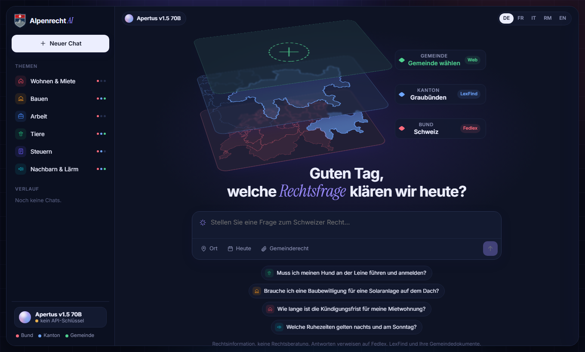
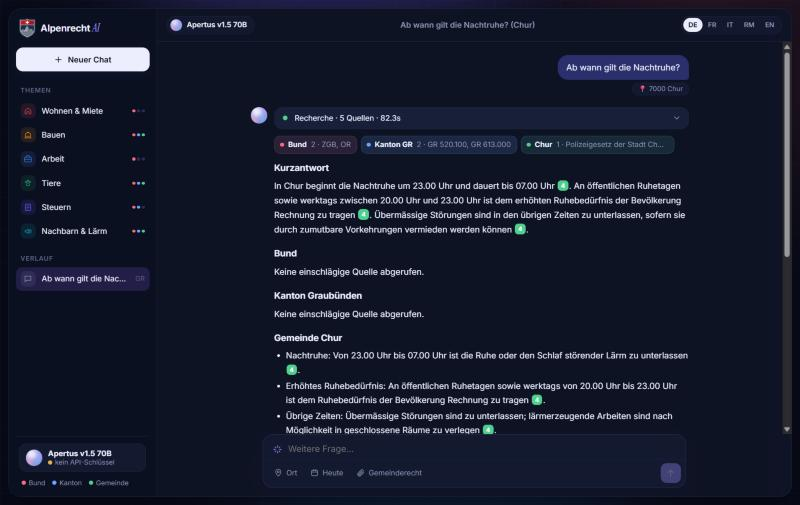

In Switzerland the answer to “Must my dog be on a leash?” or “When does night-time quiet start?” depends on where you live. The rule can sit in federal law, in one of 26 cantonal legal systems or in the regulation of one of more than 2,000 communes, in four languages and on different websites. Alpenrecht AI takes a question and an address and returns one answer covering all three levels: it retrieves the federal (Fedlex), cantonal (LexFind) and communal (the commune's own website) rules live, adds leading court decisions (entscheidsuche.ch), and Apertus-v1.5-70B writes an answer per level with every claim cited to the official text and fact-checked three times before display. It answers in DE / FR / IT / RM / EN, as of any date for federal law, and remembers the last 6 messages of a chat.
On 100 held-out questions (49 communal), graded blind by AI agents (Claude) against reference answers, the evaluated version scores 1.39/3 against 1.38/3 for the original prototype, a tie within grading noise. Both give 46/100 usable answers. The evaluated version makes fewer factual errors (43 vs 53) and is preferred head-to-head 43–36, but cites the governing source less often (53 vs 58), and communal questions remain the hardest (0.90/3). This set also guided the last day's choice between versions, so it is not fully independent (§5 d). On the 100-question development benchmark used for tuning, 85/100 answers cite a gold source (67 at baseline), and cantonal retrieval rises from 11/32 to 29/32.
question + place + date (+ the last 6 chat messages) │ ├─ swisstopo ─────────── address → commune, BFS no., canton, official languages ├─ Apertus (planner) ─── standalone question, levels, SR numbers + articles, title / keyword terms per language ├─ Fedlex SPARQL ─────── acts in force → consolidation valid on <date> → articles + annexes (tariffs) ├─ LexFind API ───────── Apertus writes the queries, picks the acts, then the articles (26 cantons, one API) ├─ communal docs ─────── commune website crawl (2,142 communes) · TLex · readers for 6 large cities · uploads ├─ case law ──────────── entscheidsuche.ch: Apertus writes the queries, ≤ 2 leading cases (BGE) with headnotes ├─ ranking + filter ──── stemmed BM25 over articles, annexes and tariff tables; Apertus relevance filter └─ Apertus (answer) ──── per level, every claim cited [n] ──► 3 verification rounds ──► answer + sources (SSE)
verify.py, checks.py), each: deterministic checks
(every [n] exists, every named article is a source, no prose citations, every CHF amount appears in a
source); fetching articles the draft names or the verifier asks for; an Apertus fact-check that lists every claim with
a verdict; a rewrite only when the round found something. The UI shows a “3× geprüft” badge with the counts.communal.py, cities.py): BFS number →
official website (a table of 2,142 communes built from Wikidata) → regulations page (navigation, sitemap, common CMS
paths, embedded JSON lists, TLex) → Apertus picks the regulation and the articles. Readers cover Zürich, Geneva,
Basel, Lausanne, Bern and Lugano. Scanned or garbled PDFs are transcribed by Apertus itself (image input, 8B model).HISTORY_MESSAGES (default 6) messages, so
“and for cats?” is searched as the full question.cache/ is emptied as soon as no question is running (uploads are kept).| Start page: the three levels for the chosen place | Answer (Chur): cited per level, 3× checked |
|---|---|
 |
 |
Target architecture: (a) on-premise, or (c) sovereign Swiss cloud. The app is one Docker container
(Flask, Python 3.13) that talks to any OpenAI-compatible Apertus endpoint set by LLM_BASE_URL: a canton's own
vLLM server (on-premise) or the CSCS inference service in Lugano (Swiss cloud, Swiss jurisdiction and data residency).
Full questions and answers go only to that endpoint; the public sources receive the place and search terms derived
from the question, never the full question. Questions are not logged (the access log records only request paths and
place look-ups). At runtime it reads public Swiss legal sources (Fedlex, LexFind, swisstopo, Wikidata for communes
missing from data/communes.json, commune websites and TLex, entscheidsuche.ch), so it is not air-gapped;
build time needs only PyPI. The browser UI loads swisstopo map tiles, Leaflet (cdnjs.cloudflare.com) and Google Fonts;
Leaflet and the fonts can be self-hosted on-premise. An air-gapped deployment (b) would need a local mirror of those
sources.
swiss-ai/Apertus-v1.5-70B for planning, retrieval steering, answers and
fact-checks; Apertus-v1.5-8B for reading scanned pages (≈ 20 s for a 24-page regulation). Both run on
the CSCS OpenAI-compatible endpoint; LLM_NAME / LLM_BASE_URL / LLM_API_KEY
follow the judges' convention; on a single-model server, set OCR_MODEL to the same value as
LLM_NAME in .env. The product uses no other model.make run.pipeline.py, lexfind_agent.py, communal.py,
caselaw.py and verify.py; answers run at temperature 0.2, planning and checks at 0.Example (benchmark T071, graded 3/3): “Ab wann gilt die Nachtruhe?” in 7000 Chur → “In Chur beginnt die Nachtruhe um 23.00 Uhr und dauert bis 07.00 Uhr [4]. An öffentlichen Ruhetagen sowie werktags zwischen 20.00 Uhr und 23.00 Uhr ist dem erhöhten Ruhebedürfnis der Bevölkerung Rechnung zu tragen [4].” [4] = Polizeigesetz der Stadt Chur, Art. 30, found on the city's website. 16 claims checked in three rounds.
data/communes.json: commune → official website for 2,142 communes, built once from Wikidata
(CC0); data/wikidata_raw.json is the raw SPARQL export it was built from, kept for provenance and not
read at runtime.eval/: 14 questions (first rounds); 100 questions with gold sources (68
federal, 32 cantonal; DE 46 / FR 30 / IT 15 / EN 9; 15 cantons; federal gold articles checked programmatically to
exist on Fedlex, cantonal gold acts chosen automatically from LexFind title matches); 100 graded test questions; 21
communal questions, three sets of 10 random communes and 18 fee questions; 100 held-out questions with reference answers (questions_heldout100.json,
heldout100_reference.json).(a) Gold-source benchmark (100 development questions, live retrieval, eval/BENCHMARK100.md):
| Baseline (keyword LexFind, single pass) | Final (Apertus LexFind agent + 3× verification) | |
|---|---|---|
| Answer cites a gold source | 67/100 | 85/100 |
| · federal questions | 56/68 | 57/68 |
| · cantonal questions | 11/32 | 28/32 |
| Cantonal gold act retrieved | 11/32 | 29/32 |
| Answers naming an article that is not a source | 13/100 | 0/100 |
Prose citations left unconverted · invalid [n] | 18 · 0 | 0 · 0 |
| Right language · all headings · disclaimer | 99 · 99 · 99 | 99 · 99 · 99 |
The “not a source” row checks article numbers only, not which law they belong to. The verification loop checks about 10 claims per answer and adds 0.4 real sources per answer on average. On the first 14-question set, the 8B model reached the same 13/14 gold citations as the 70B in the final round.
(b) Graded 0–3 by an AI grading agent (Claude) with a lawyer's rubric (0 = wrong … 3 = correct, concrete, right sources; development questions, real pipeline, 70B, three verification rounds):
| Run | Questions | Average /3 | Fully correct (3) | Avg time |
|---|---|---|---|---|
| v1 | 100 | 1.55 | 12 | 84 s |
| v2: Apertus picks federal articles, planner examples, no-invented-figures rules, city readers | 100 | 1.72 | 21 | 121 s |
Both runs are on development questions and were graded once by AI grading agents (Claude) using a lawyer's 0–3 rubric, not by lawyers.
(c) Communal law and figures.
eval/random10*.json): 2/10 cite the commune's regulation on a first random
set before the crawler fixes (TLex, two-column PDFs, OCR, polite retries); the fixes were tuned on a second set
(5/10 → 6/10); on a fresh third set, 6/10 cite a communal regulation, 4 of them the correct, readable one.eval/FEES.md, 18 questions in 12 communes and federal fees): the short answer states an
amount from a source in 17/18 in the full run, 18/18 after a targeted re-run of the one miss (6/18 before), e.g. Basel dog tax CHF 160, Lugano CHF 115, Zürich parking card
Fr. 300, passport CHF 140 (OLDI annex 2), debt-collection extract CHF 17 (GebV SchKG 12a).(d) Held-out check (eval/questions_heldout100.json,
eval/ACCURACY_heldout100.txt, per-question data in eval/heldout/): 100 new questions, separate
from the development sets (49 communal, 12 cantonal, 39 federal; DE 46 / FR 34 / IT 12 / EN 8). AI agents (Claude)
drafted the questions and reference answers from the official sources, and a second agent re-checked each item (15
corrected, 0 dropped); no person or lawyer wrote or checked them. The original prototype and the evaluated version,
commit c0c4e48, answered the same questions; Claude agents graded them single-pass, blind and in pairs
against the reference answers, 0–3.
| Average /3 | Usable (≥ 2) | Fully correct | Factual error | Governing source cited | Off-topic padding | |
|---|---|---|---|---|---|---|
| Original prototype | 1.38 | 46 | 19 | 53 | 58 | 36 |
Evaluated version (c0c4e48) | 1.39 | 46 | 21 | 43 | 53 | 22 |
The evaluated version is preferred head-to-head 43–36 (21 ties), makes fewer factual errors (43 vs 53)
and pads less, but is not more often usable (46 vs 46) and cites the governing source less often (53 vs 58). By level
(original → evaluated): federal 1.92 → 1.95, cantonal 1.92 → 1.58 (12 questions only), communal 0.82 → 0.90.
Not fully independent: on the last day, earlier candidate versions were also run and graded on this set; in that
pass one candidate scored 1.33/3 against 1.51/3 for the original, and the revert to the original source filter and
federal article choice (c0c4e48) was decided from those grades (an earlier change, 9bfe4d7,
from a partial grading of 66 questions). The same original answers scored 1.51/3 then and 1.38/3 in the final pass, so
single-pass AI grading varies by about ±0.1/3 here. The later commits 9eb4d52 and 3bef387
(fee tariffs and ordinances, CHF amount check, Lugano reader, conversation memory, cache clearing) were not measured
on this set; the fee changes only on the 18 fee questions and a 20-question regression sample. The tuning-set figures in (a)–(c) overstate accuracy on new
questions.
VERIFY_MODEL=swiss-ai/Apertus-v1.5-8B is a faster option (its accuracy was not
measured).make run (Docker, python:3.13-slim) starts the web app; make test runs the
11 offline tests (no network, no API); make ask Q="…" PLACE="…" answers in the terminal;
make eval SET=eval/questions_heldout100.json re-runs a question set live.python eval/bench.py --set questions100.json --tag … --workers 5 re-runs a benchmark live;
eval/build_set100.py rebuilds and re-verifies the gold set.eval/heldout/): python score.py
grades_blind.json blind_key.json original evaluated ../questions_heldout100.json (details in
eval/heldout/README.md).c0c4e48; fdb96d8 has the same
pipeline code in this layout. Stored runs keep their answers, sources and verification logs in
eval/results/ (development) and eval/heldout/ (held-out, with the blind key and grades).Following the Hack Apertus Terms & Conditions §6: code Apache-2.0 (LICENSE at the repository root);
documentation, including this report, CC-BY-4.0; datasets (eval/, data/) CDLA-Permissive-2.0.
data/communes.json is derived from Wikidata (CC0). The law texts the app retrieves are official enactments
and decisions, which Swiss copyright law does not protect (Art. 5 para. 1 URG).
[1] Fedlex, the publication platform for federal law: https://www.fedlex.admin.ch · [2] LexFind, cantonal law collections: https://www.lexfind.ch · [3] swisstopo geocoding API: https://api3.geo.admin.ch · [4] entscheidsuche.ch, Swiss court decisions: https://entscheidsuche.ch · [5] Swiss AI Initiative, Apertus: https://huggingface.co/swiss-ai